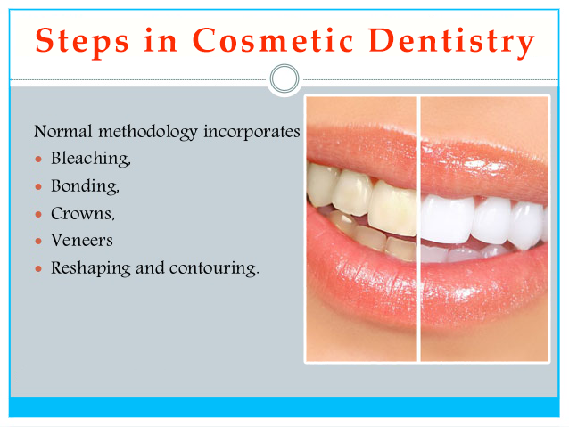
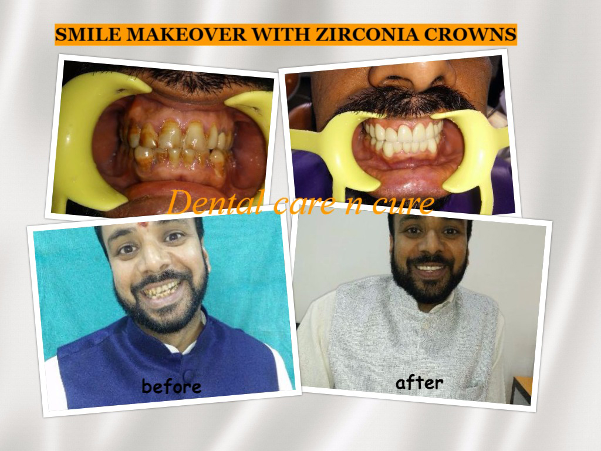

Cosmetic dentistry includes all procedures of dentistry that are aimed at creating a positive change to your teeth and smile. Cosmetic dentistry procedures have to be in compliance with the overall general and oral health of the patient. Your smile creates an immediate, subconscious, visual impact on people you meet. A brighter smile gives the impression of youth, vitality, radiant health, happiness, and warmth. A bright smile is perceived as a healthy smile
Smile makeovers can have dramatic results on your overall facial appearance; it helps to boost your confidence, self-esteem, and make you want to smile more. With modern advances in dentistry, cosmetic dentistry procedures can range from teeth whitening to change in shape and size of teeth. All these cosmetic dentistry procedures give a complete smile makeover and beautify the face on the whole.
Composite Bonding/composite veneers are a good option because it provides a successful attachment between the filling material and the tooth’s original enamel and dentin.
Porcelain veneers are thin pieces of porcelain used to recreate the natural look of teeth. Porcelain veneers provide strength and resilience comparable to natural tooth enamel.
Benefits-
Some patients are looking for an alternative to traditional dental veneers or bonding, but be aware that this treatment option is not appropriate for everyone. Just as with porcelain veneers, “no-prep” or minimal preparation veneers— so called because they typically don’t require the dentist to remove as much tooth material—are bonded to the front surface of your teeth. Often, the placement of no-prep veneers can be done more quickly and with less discomfort than traditional veneers. No prep veneers can be performed composite veneers called by name of Componeers to fit to existing tooth structure or can be custom made porcelain veneers.
Orthodontics is more commonly referred to as “braces,” but this simple term can be misleading, as the science of orthodontics is actually quite precise.
Use of braces /aligners in cosmetic dentistry or smile makeover
Each option offers its own benefits and issues and should be carefully selected to suit the situation.

The real long-term goal of any periodontal surgery is to increase the life expectancy of the teeth and their usefulness; it is not a cure for periodontal disease. Basically, periodontal surgery removes tissue that has been transformed by the disease and then reconstructs the gums and surrounding tissues to better support the teeth and to recreate a normal appearance.
Teeth whitening commonly known as bleaching of teeth. Most teeth can be whitened and there are a number of ways to whiten teeth.
Types of teeth whitening-External tooth whitening- when vital teeth are bleached by direct contact with a safe and commonly used whitening agent, either in a dental office or at home.
Dentists no longer need to rely on unsightly metals to replace tooth structure lost to decay, but use high density, state-of-the-art plastic (composite resins) and porcelain materials instead. These materials more naturally mimic the look, feel, and function of natural teeth and actually bond directly to the remaining enamel and dentin. This means that new fillings preserve more of the natural tooth so less repair work is necessary immediately and in the future. These modern filling materials are also more natural in appearance; it’s almost impossible to tell that your tooth has a filling. And the past, teeth were filled with a mixture—or amalgam—of different metals. Today that is changing as more natural-looking and metal-free dental fillings are becoming the preferred approach.
Dentists are using more tooth-like materials (composite resins and porcelains) that are both safe and predictable. The most important feature, for many people, is that they look and react more like natural teeth.
Inlays and Onlays are indirect restorations that can be used to help an otherwise healthy tooth with a large filling. Inlays are placed within the grooves between the cusps (points) of a tooth, whereas Onlays are placed within the grooves and over the cusp tips. Inlays and Onlays can be uses replace old filings, more esthetically pleasing because they can be made to match a tooth’s natural color. Highly strengthen the structure of a tooth because of their durability and longevity.